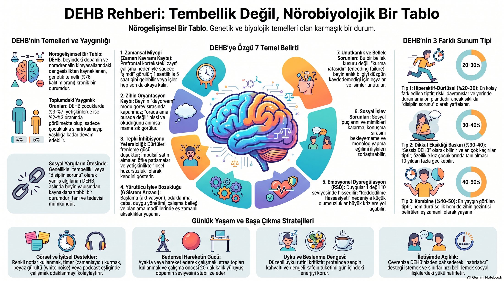
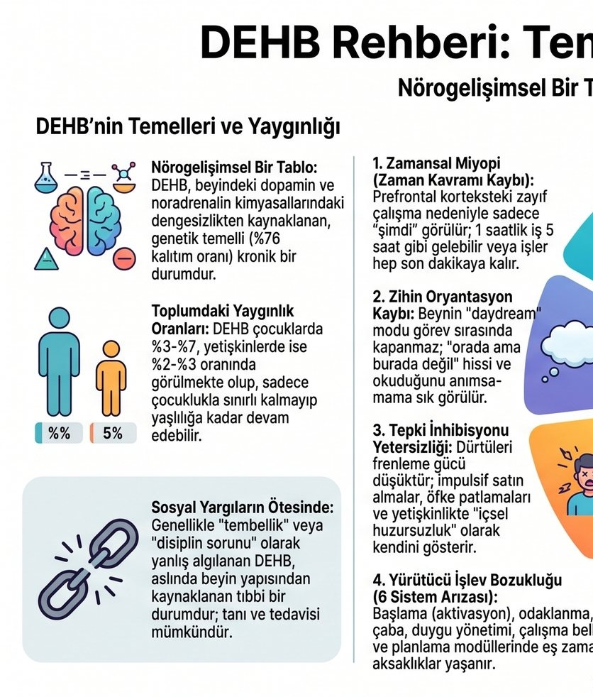
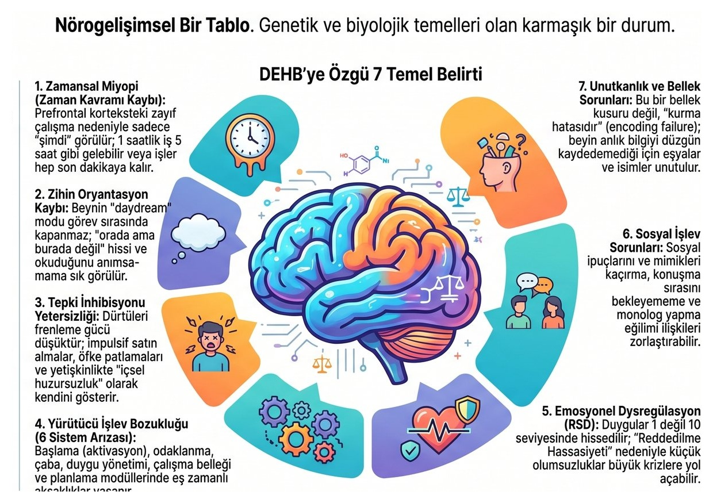
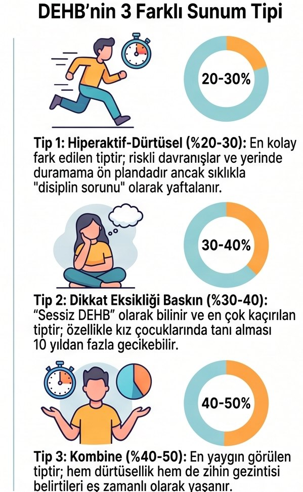
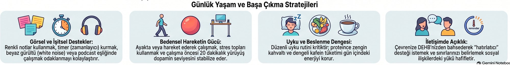

⚙️
Sherlock hazırlanıyor...
Sırada ne var?
Bugün için planlanmış mikro görev yok.
n8n tarafından parçalanmış görevlerini burada yönetebilirsin.
Seçilen Gün
n8n "Sis Giderici" algoritması ile görevlerini mikro parçalara böler.
Selam kral! Bugün hangi büyük projeyi beraber mikro parçalara bölelim? Deadline seçmeyi unutma ki takvimini ona göre optimize edeyim! 🚀
Bilişsel Koruma
Analiz felcini önlemek için görevler odak süresi uzunluğunda dilimlere bölünür.
Profil Uyumu
Planlama yapılırken en verimli saatlerin önceliklendirilir.
Tersine Planlama
Deadline'dan bugüne doğru bir yol haritası oluşturulur.
Beynin nasıl çalışıyor? Sana özel planlar yapabilmem için ayarlarını kişiselleştir.
Odak süren ve hiperfokus sınırın planlamayı şekillendirir
Zaman körlüğüne karşı düzenin sınırları
Beynini çalışmaya sokan stimülasyonlar
DEHB yalnızca eksiklerden ibaret değil — güçlü yanlarını işaretle, planlaman bunlara yaslansın
n8n, bu notları planlama sonunda sana hatırlatıcı olarak gönderir.
1 / 6 • Nörogelişimsel Genel Bakış

DEHB %76 kalıtım oranına sahip biyolojik bir durumdur. Prefrontal korteksteki dopamin dengesi nedeniyle beyin, sıradan görevlerde doğal uyarılma arar.

Çocukların %3-7'sinde, yetişkinlerin %2-3'ünde görülür. "Tembellik" veya "disiplinsizlik" değil; dopamin eksikliği nedeniyle ödül hissinin gecikmesidir.

DEHB beyni için sadece "ŞİMDİ" ve "ŞİMDİ DEĞİL" vardır. Son dakika paniği olmadan harekete geçmek zordur; hayal modu (DMN) görev anında açık kalabilir.

Hiperaktif (%20-30): Yüksek enerji ve acelecilik. Dikkatsiz / Sessiz DEHB (%30-40): İçsel dalgınlık, geç teşhis edilir. Kombine (%40-50): En yaygın tür.

Görsel eriyen sayaçlar, Brown Noise ritimleri, ayakta çalışma ve sabit sirkadiyen uyku saati; zihnin dağılmasını engelleyen en güçlü kalkanlardır.
Güvenilir uluslararası ve yerel tıp kuruluşları
Parçaladığın görevler burada — istediğini tek tıkla temizle.
Henüz parçalanmış bir projen yok.
Sherlock hazırlanıyor...